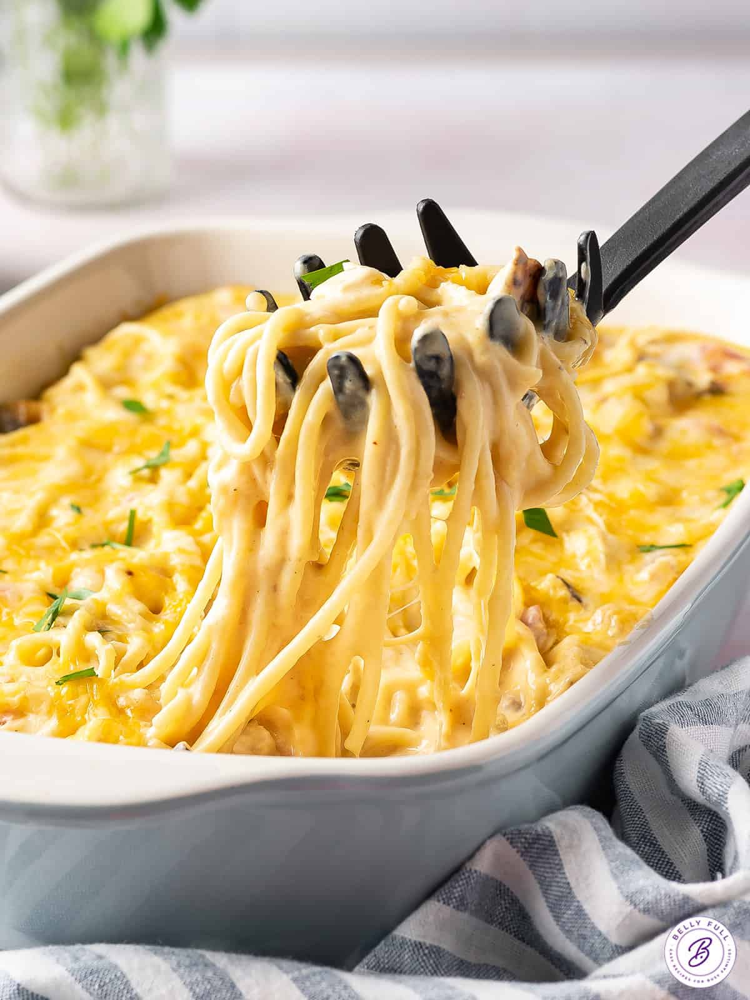

Chicken Spaghetti

Description
This is a quick and easy chicken spaghetti recipe!
You will learn how to cook the perfect cheesy,
and falvorful chicken spaghetti.
Ingridients
- 12oz pack of angel hair pasta
- 2 cups chopped chicken breast
- 10.75oz can condensed cream of chicken soup
- 10oz can diced tomatoes with green chile peppers
- 8oz processed cubed cheese
- 4oz jar sliced mushrooms drained
- salt and pepper
Directions
- Bring large pot of slightly salted water to a boil
- Cook angel hair pasta in the boiling water until tender yet firm to bite,
approx 4-5 min
- Add chopped chicken, condensed soup, diced tomatoes and chile peppers,
processed cheese, mushrooms, salt, and pepper
- Cook and stir over low heat until cheese is melted and mixture is heated through
approx, 5 minutes